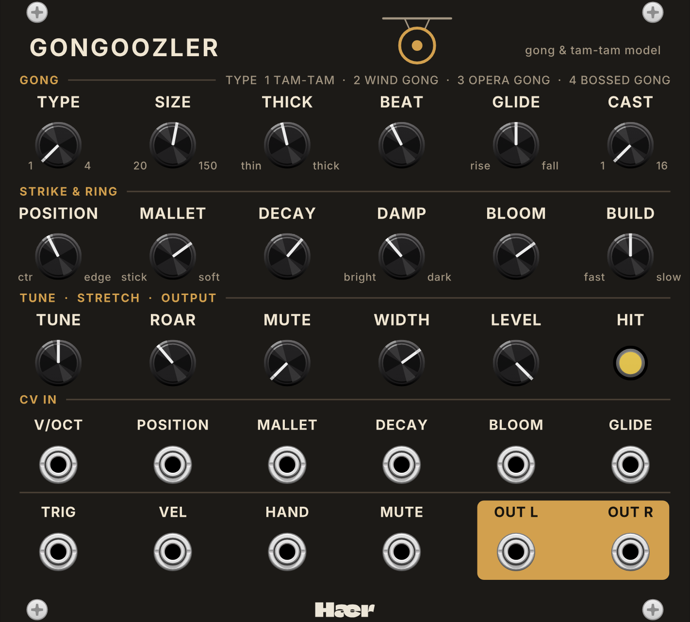
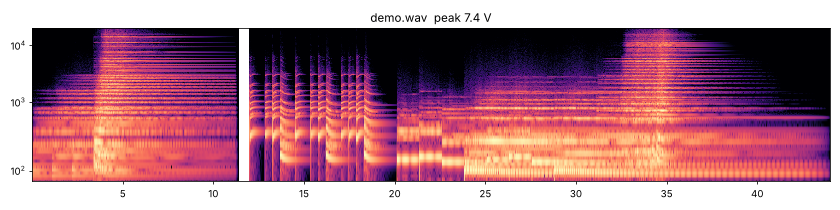
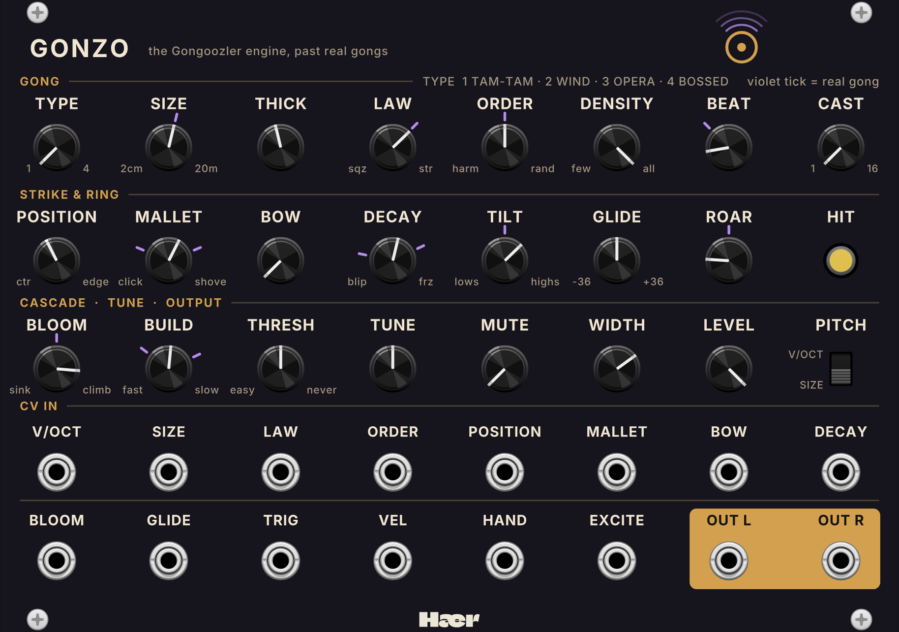
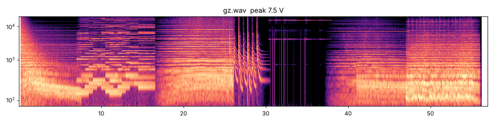

One gong, hung and ready. Patch a trigger into TRIG, take OUT L (mono) or both outs (stereo), and pick a starting point from the right-click menu.
Inside are up to 256 ringing modes, laid out like a real plate. What makes a gong a gong is what happens after the hit:
| Type | What it is | Pitch |
|---|---|---|
| 1 Tam-tam | Big flat orchestral gong with no clear note. Deep hum, then the biggest bloom. | Set by SIZE and THICK; TUNE and V/OCT transpose. |
| 2 Wind gong | Thinner Chinese flat gong. Blooms easily and quickly into a bright, crashing roar. | Set by SIZE; TUNE and V/OCT transpose. |
| 3 Opera gong | Small Peking-opera gong with one clear note. The big one falls in pitch (GLIDE +), the small one rises (GLIDE −). | Plays notes: 0 V at V/OCT = C4, plus TUNE. (Right-click to let SIZE set the pitch instead.) |
| 4 Bossed gong | Gamelan gong ageng, kempul or Thai gong with a raised boss: warm, nearly harmonic note that beats slowly. |
| Control | What it does |
|---|---|
| SIZE | Diameter, 20 to 150 cm. Bigger is lower, longer and more sluggish to bloom. |
| THICK | Thin gongs bloom at gentle hits; thick ones need a real whack. |
| BEAT | How strongly paired tones beat. On bossed gongs it is the ombak speed and depth. |
| GLIDE | Pitch bend at a full hit, −7 to +7 semitones. + starts high and falls back, − starts low and rises. Softer hits bend less (by the square of the loudness, like the real thing). |
| CAST | Which individual gong (16 castings, each slightly different). |
| POSITION | Where you hit: centre (the boss on tuned gongs, the deep hum on a tam-tam) out to the edge (more clang). Read at each hit. |
| MALLET | Hard stick (bright, clanky) to big soft beater (dark start, then the bloom does the work). Read at each hit. |
| DECAY / DAMP | How long it rings, and how fast the highs die compared with the lows. |
| BLOOM / BUILD | How much of a hard hit climbs into the wash, and how slowly it climbs (fast is a crash, slow is a swell). |
| TUNE | ±24 semitones, added to V/OCT. |
| ROAR | The plate stretching: growl, smear and a downward sweep on hard hits. Turn it down for a cleaner gong. |
| MUTE | A towel on the gong (MUTE jack adds 0 to 10 V on top). |
| HAND jack | A hand grabbing the gong. A trigger grabs it for 200 ms; a held gate keeps holding. |
| WIDTH / LEVEL / HIT | Stereo spread, output level (up to about ±8 V on big hits) and a manual hit button (7.5 V velocity). |
| CV row | V/OCT, then POSITION, MALLET, DECAY, BLOOM (±5 V sweeps the whole knob) and GLIDE (1 V = 1 semitone). |
| Tam-tam, 36" | Soft beater, centre-ish strike, big slow bloom. Try one hit with VEL at 10 V and wait. |
| Wind gong, 24" | Fast roaring wash. Feed it a fast clock with rising VEL for a swell, then one hard hit. |
| Opera gong, large | Falls about 2.5 semitones on hard hits. |
| Opera gong, small | Rises about 2.5 semitones. Pair it with the large one for the Peking-opera "dang ... ching" pattern. |
| Gong ageng | Big gamelan gong, C2, long ring with slow ombak beating. |
| Kempul / Thai gong | Smaller bossed gong, C3; play melodies with V/OCT. |

0 s tam-tam: three soft touches, one big hit that blooms (the bright wash arriving after the hit), a hand grabs it at 11 s. 12 s opera gongs, large falling and small rising. 19.5 s gamelan: kempul on the beats, gong ageng closing each phrase. 31 s wind gong roll, a big hit, then a towel. Also: hit-*.wav, each starting point hit soft, medium, hard.
Each gong type has its own list of plate modes (flat plates follow Chladni's law, so modes are sparse low and crowded high; tuned gongs add a boss note and partials). Non-round modes come in near-identical pairs, which beat. The bloom is an energy cascade through seven octave bands: each band hands energy to the one above at a rate that grows with its own loudness, so it switches on only for hard hits and never adds energy that wasn't there. Roar is the stretching of the plate (Berger tension) as an energy-conserving force, so it can't run away. Not yet heard inside VCV Rack.

At its violet ticks Gonzo is a Gongoozler tam-tam. Every knob goes further than a real gong can: the ticks show where the real range sits, everything past them is invented physics.
The right-click menu has 8 starting points that show the range: Sinking sun, Glass organ, Bowed sheet 8 m, Laser gong, Crotale rain, Whale, Resonator (patch drums into EXCITE), and back to the plain tam-tam.
| Control | Range | What it does |
|---|---|---|
| SIZE | 2 cm .. 20 m | crotale pings to sheets whose lowest modes are below hearing (you hear them through ROAR and BLOOM). |
| PITCH switch | SIZE / V/OCT | up: every type, tam-tam too, takes its lowest mode from V/OCT (0 V = C4). |
| LAW | x0.25 .. x2 | mode spacing. Squeeze it and the plate's modes crowd together towards a string or pipe; stretch it for bar and glass spacing. |
| ORDER | -1 .. +1 | left pulls every mode onto a whole harmonic (singing, organ-like); right scatters them at random. |
| DENSITY | 3 .. 100 % | how many modes exist: a handful of tones (bell, bar) up to the full 256. |
| BEAT | 0 .. 3 | past the tick, the beating pairs detune into chorus and clusters. |
| MALLET | click .. shove | a 13-microsecond click up to a 0.2-second push that is pure sub thump. |
| BOW | 0 .. 100 % | rubs the plate continuously, so it swells and drones without any hits (CV 0-10 V). |
| EXCITE jack | audio | any audio drives the plate at the strike position: the gong as a resonator for drums, voices or feedback. |
| DECAY | blip .. freeze | quarter-second blips up to minutes; fully right, it never dies (HAND or MUTE still stop it). |
| TILT | -1 .. +1 | right of centre is a real gong (highs die first); left makes the lows die first, leaving glassy highs hanging. |
| BLOOM | sink .. climb | right: energy climbs into the wash. Left: it sinks, so a bright hit collapses into a swelling hum. |
| BUILD / THRESH | 5 ms .. 20 s / x0.01 .. x100 | how fast the bloom moves, and how hard you must hit before it starts (left: a whisper blooms). |
| GLIDE / ROAR | ±36 st / 0 .. 2 | laser zaps and dive bombs; stretch force up to 4x a real plate. |

0 s Sinking sun. 7 s Glass organ playing an F minor arpeggio (three Gonzos). 16 s Bowed sheet, 8 m, no hits. 25 s Laser gong. 30 s Crotale rain. 37 s Whale. 47 s Resonator with a drum loop in EXCITE.